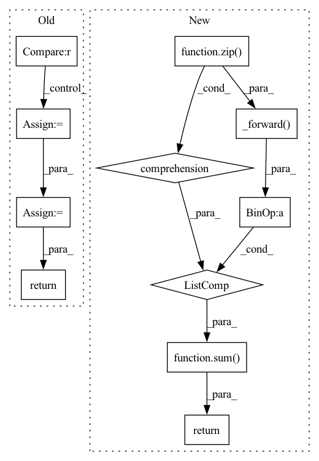

Pattern ID :5916

Before Change
def forward(self, score, target):
ph, pw = score.size(2), score.size(3)
h, w = target.size(1), target.size(2)
if ph != h or pw != w:
score = F.upsample(
input=score, size=(h, w), mode="bilinear")
loss = self.criterion(score, target)
return loss
class OhemCrossEntropy(nn.Module):
def __init__(self, ignore_label=-1, thres=0.7,
After Change
weights = config.LOSS.BALANCE_WEIGHTS
assert len(weights) == len(score)
return sum([w * self._forward(x, target) for (w, x) in zip(weights, score)])
class OhemCrossEntropy(nn.Module):
def __init__(self, ignore_label=-1, thres=0.7,
In pattern: SUPERPATTERN
Frequency: 3
Non-data size: 11
Instances
Fragment ID: 20818076
Project Name: chenjun2hao/ddrnet.pytorch
Commit Name: 3ce340bc520946fb220e83075f6e015bbe87cfe5
Time: 2019-12-12
Author: hsfzxjy@gmail.com
File Name: lib/core/criterion.py
M Class Name: CrossEntropy
N Class Name: CrossEntropy
M Method Name: forward(3)
N Method Name: forward(3)
M Parent Class: nn.Module
N Parent Class: nn.Module
M File Name: lib/core/criterion.py
N File Name: lib/core/criterion.py
M Start Line: 20
M End Line: 28
N Start Line: 36
N End Line: 42
'>
Before Change
def forward(self, preds: Tensor, labels: Tensor) -> Tensor:
// preds in shape [B, C, H, W] and labels in shape [B, H, W]
if preds.shape[2:] != labels.shape[1:]:
preds = F.interpolate(preds, size=labels.shape[1:], mode="bilinear", align_corners=False)
n_min = labels[labels != self.ignore_label].numel() // 16
loss = self.criterion(preds, labels).view(-1)
loss_hard = loss[loss > self.thresh]
if loss_hard.numel() < n_min:
loss_hard, _ = loss.topk(n_min)
return torch.mean(loss_hard)
class Dice(nn.Module):
After Change
def forward(self, preds, labels: Tensor) -> Tensor:
if isinstance(preds, list):
return sum([w * self._forward(pred, labels) for (pred, w) in zip(preds, self.aux_weights)])
return self._forward(preds, labels)
class Dice(nn.Module):
'>
Fragment ID: 20818072
Project Name: sithu31296/semantic-segmentation
Commit Name: b68900992fb24dd5166b2b34e3d35d19493d747d
Time: 2021-08-21
Author: sithu31296@gmail.com
File Name: utils/losses.py
M Class Name: OhemCrossEntropy
N Class Name: OhemCrossEntropy
M Method Name: forward(3)
N Method Name: forward(3)
M Parent Class: nn.Module
N Parent Class: nn.Module
M File Name: utils/losses.py
N File Name: utils/losses.py
M Start Line: 25
M End Line: 37
N Start Line: 46
N End Line: 49
'>
Before Change
def forward(self, preds: Tensor, targets: Tensor) -> Tensor:
// preds in shape [B, C, H, W] and targets in shape [B, C, H, W]
if preds.shape[2:] != targets.shape[2:]:
preds = F.interpolate(preds, size=targets.shape[2:], mode="bilinear", align_corners=False)
tp = torch.sum(targets*preds, dim=(2, 3))
fn = torch.sum(targets*(1-preds), dim=(2, 3))
fp = torch.sum((1-targets)*preds, dim=(2, 3))
dice_score = (tp + 1e-6) / (tp + self.delta * fn + (1 - self.delta) * fp + 1e-6)
dice_score = torch.sum(1-dice_score, dim=-1)
// adjust loss to account for number of classes
dice_score = dice_score / targets.shape[1]
return dice_score.mean()
After Change
def forward(self, preds, targets: Tensor) -> Tensor:
if isinstance(preds, list):
return sum([w * self._forward(pred, targets) for (pred, w) in zip(preds, self.aux_weights)])
return self._forward(preds, targets)
'>
Fragment ID: 20818069
Project Name: sithu31296/semantic-segmentation
Commit Name: b68900992fb24dd5166b2b34e3d35d19493d747d
Time: 2021-08-21
Author: sithu31296@gmail.com
File Name: utils/losses.py
M Class Name: Dice
N Class Name: Dice
M Method Name: forward(3)
N Method Name: forward(3)
M Parent Class: nn.Module
N Parent Class: nn.Module
M File Name: utils/losses.py
N File Name: utils/losses.py
M Start Line: 48
M End Line: 62
N Start Line: 77
N End Line: 80